Overview
The Track View is the embedded Sandbox cut-scene editing tool for making interactive movie sequences with time-dependent control over objects and events in CRYENGINE.
Creating cinematic cut-scenes and scripted events are both possible, allowing you to sequence objects, animations, and sounds in a scene that can be triggered in the game and, played either as a detached cut-scene from the third person perspective, or from the first person perspective of the player while playing the game.
Sequences created with the Track View can be triggered in game with a specific Flow Graph node. Different properties enable sequences to range from passive in game scenarios up to fully uncoupled cut-scenes.
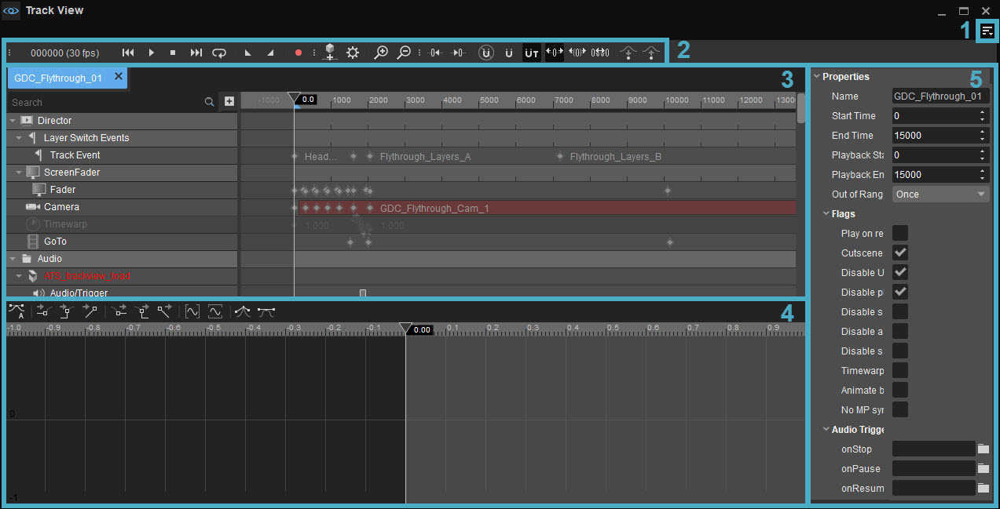
The Track View consists of the following panels and buttons:
1. Menu
The Menu can be accessed via the 
File
Option | Description |
|---|---|
New... | Creates a new sequence. |
Open... | Opens an existing sequence. |
Close | Closes the current sequence. |
Delete Sequence... | Lets you delete an entire sequence. |
Import... | Imports a sequence. |
Export... | Exports a sequence. |
Edit
Option | Description |
|---|---|
Undo | Undoes the last action. |
Redo | Redoes the last undone action. |
Copy | Copies the current selection. |
Cut | Cuts the current selection. |
Paste | Pastes a copied or cut selection. |
Delete | Deletes the current selection. |
Duplicate | Duplicates the current selection. |
New Event | Creates a new event that can trigger an action within the Flow Graph. |
Show Events | Shows the existing events and lets you add new ones via the Add button. |
View
Option | Description |
|---|---|
Zoom In | Zooms in on the dopesheet. |
Zoom Out | Zooms out on the dopesheet. |
Show Dopesheet | Shows/hides the dopesheet. |
Show Curve Editor | Shows/hides the Curve Editor. |
Sequence Properties | Displays the global properties of a sequence in the Track View specific properties panel. |
Link Timelines | Links the timelines on the dopesheet and the Curve Editor together. |
Show Key Text | Shows/hides the names of the keys in the dopesheet. |
Sync Selection | When enabled, syncs the selection between the Track View dopesheet and the Level Explorer and Properties in the main Sandbox UI. |
| Invert Scrubber Snapper Behavior | Inverts the snapper behavior of the scrubber; e.g. when this it's active, snapping works as intended instead of being deactivated when the ALT key is pressed and vice versa. For more information about the snapping behaviors, please see the Toolbar section below. |
Units | |
Ticks | Uses ticks as units in the dopesheet. |
Time | Uses time in the dopesheet. |
Timecode | Uses timecode in the dopesheet. |
Frames | Uses frames as units in the dopesheet. |
Playback
Option | Description |
|---|---|
Play | Plays the sequence. |
Pause | Pauses the sequence. |
Stop | Stops the sequence. |
Loop | Loops the sequence. |
Set Playback Start | Sets the start time for sequence playback and places a marker. |
Set Playback End | Sets the end time for sequence playback and places a marker. |
Reset Start/End | Removes all start and end time markers you have set. |
Record | Allows for recording of live keyframes within a timeline in your sequence. |
Playback Speed | Changes the playback speed. |
Framerate | Changes the framerate. |
Tools
Option | Description |
|---|---|
Render Sequence | Opens the render dialog, allowing the user to render the sequence. |
| Create Light Animation Set | Creates a new sequence called _LightAnimationSet. In this sequence, users can add a Light Animation node to the Events and Nodes List to animate the light. In order to use this node properly, you need the Legacy Light entity which can only be found in GameSDK project. For more information, please visit the Asset Database . |
Toolbars
Option | Description | ||||
|---|---|---|---|---|---|
Customize... | Opens the toolbar customization window allowing users to customize existing toolbars, and/or create new toolbars within the Track View. | ||||
Lock Toolbars | When disabled, the positions of toolbars and spacers within the Track View can be changed by drag and drop. | ||||
Spacers | The following options allow users to use spacers in positioning their toolbars.
The Spacers menu options are only available when Toolbars → Lock Toolbars is disabled. | ||||
| Toolbars | Lists all default and custom toolbars created for the Track View, allowing you to select which toolbar you'd like to hide or display. |
When a tool has a toolbar, whether this is a default one or a custom one, the options above are also available when right-clicking in the toolbar area (only when a toolbar is already displayed).
Help
Opens the documentation page for this tool.
2. Toolbar
Button | Name | Description |
|---|---|---|
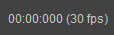 | Unit display | Shows where on the timeline you currently are. |
Go to start of sequence | Skips to the start of the sequence. | |
Play | Plays the sequence. | |
Stop | Stops the sequence. | |
Go to end of sequence | Skips to the end of the sequence. | |
Loop | Loops the sequence. | |
Set Playback Start | Sets the start time for sequence playback and places a marker. | |
Set Playback End | Sets the end time for sequence playback and places a marker. | |
Record | Allows for recording of live keyframes within a timeline in your sequence. | |
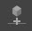 | Add Selected Entities | Adds the selected entity object(s) to the currently active animation sequence in Track View. After objects are added, they can be animated and their properties can be changed as the playback continues. Right-clicking this button will reveal a list where users can set Tracks as default. This makes sure that the selected Tracks are automatically assigned to the entity when it's added to the list via the Add Selected Entities button. |
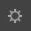 | Sequence Properties | User can edit the currently loaded sequence properties. |
Zoom In | Zooms in on the dopesheet. | |
Zoom Out | Zooms in on the dopesheet. | |
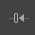 | Go To Previous Key | Skips to the previous key of the currently selected track in both Dope Sheet Editor and Curve Editor. |
Go To Next Key | Skips to the next key of the currently selected track in both Dope Sheet Editor and Curve Editor. | |
No Snapping | Disables snapping. Alternatively, holding Alt | |
Key Snapping | Jumps to next or previous key when dragging playback progress indicator line. | |
Time Snapping | Jumps to next or previous unit of time when dragging playback progress indicator line. | |
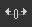 | Move Keys | Allows you to move the keys individually on the Dopesheet. |
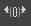 | Slide Keys | Allows you to slide all the keys on the same row to the left and right. |
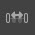 | Scale Keys | Allows you to scale keys relative to the cursor position. |
Sync Selected Tracks to Base Position | Syncs the selected tracks to the base position. | |
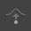 | Sync Selected Tracks from Base Position | Syncs the selected tracks from the base position. |
3. Dopesheet
The dopesheet is the primary track view window. It allows you to add and remove nodes as well as create edit and remove animation keys.
Nodes and Tracks List
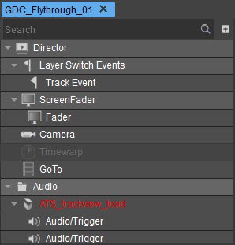
On the left is a list showing the Nodes and Tracks contained within your track view sequence.
The search bar allows you to quickly find a specific node.
The
Context Menu
Depending on the place that has been right-clicked, the context menu displays different options.
| Option | Description |
|---|---|
| Add Selected Entity | When an entity is selected in the Viewport, this option puts the selected entity in the Nodes and Tracks list as an Entity Node. This option can also be used to add multiple entities at the same time to the list. |
| Add Node | Adds the selected Node to the list. |
| Delete | Deletes the selected Node or Track from the list. Multiple Nodes and Tracks can be Deleted at the same time. |
| Enable | Enables the Node. Multiple Nodes and Tracks can be Enabled at the same time. |
| Disable | Disables the Node. Multiple Nodes and Tracks can be Disabled at the same time. |
| Select in Viewport | Available when an Entity Node is right-clicked. It selects the respective entity in the Viewport. |
| Add Track | Available when a Node is right-clicked. It displays the Tracks that can be assigned to the Node. These Tracks can be used to manipulate the entity in the cutscene/sequence and they can vary based on the Node type that has been right-clicked. Same Track can be assigned to multiple Nodes. To do so, select the Nodes and right-click one to choose a Track from the Add Track list. |
| Copy Keys | Copies the keys that has been assigned to the Node/Track. |
| Copy Selected Keys | Copies only the selected keys that has been assigned to the Node/Track. |
| Import Node | Imports the Node. |
| Export Node | Exports a Node. |
Dopesheet Events
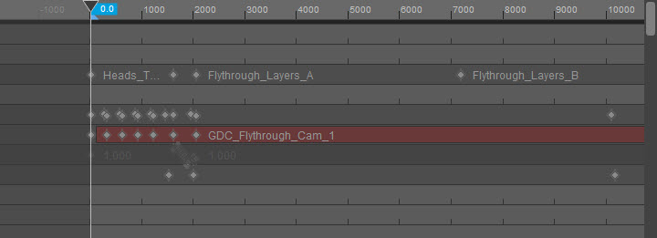
Each track view node has a track on which keys can be assigned. These new keys then can be edited or removed.
Double-clicking on a track line adds a new key on clicked position. Keys can be box selected and once selected, Delete will remove these keys.
Each key contains it's own unique values which are used to store things like position, rotation.
Rotating an object while the Record button is active creates new position keys on the Dopesheet.
Context Menu
When you right-click anywhere on this section, a context menu with the following options will appear:
Option | Description |
|---|---|
Move Selection to Cursor | Aligns currently selected keys to the cursor. |
Duplicate | Duplicates selected keys. |
Delete | Deletes selected keys. |
Play/Pause | Plays/pauses the sequence. |
Previous Frame | Skips to the previous frame in the sequence. |
Next Frame | Skips to the next frame in the sequence. |
Jump to Previous Event | Jumps to the previous event in the sequence. |
Jump to Next Event | Jumps to the next event in the sequence. |
Copy | Copies what you have selected. |
Cut | Cuts what you have selected. |
Paste | Pastes what you have previously copied or cut to the position of the cursor. |
4. Curve Editor
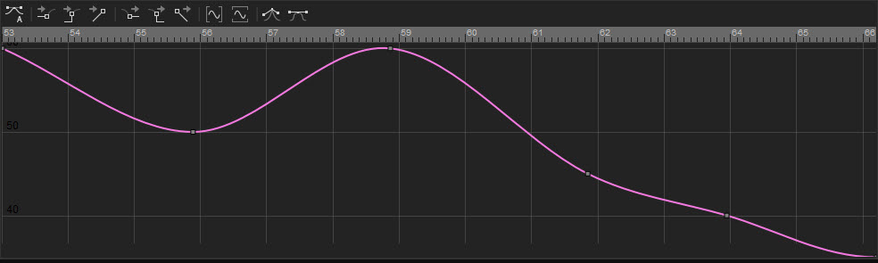
The Curve Editor is a powerful tool that lets you alter the splines between keyframes. It can be used to tweak certain properties much in the same way that users can in the Environment Editor (Old as of 26/2). It shows the progression of the values for the selected node/track over the course of a specific time and how gradually they change. It is especially useful when time-based periodic changes are envisioned for a sequence in the Track View.
Simply select a track in the dopesheet and the curve will be visible in the curve editor.
There are a few functions that can be useful to know when using the Track View's Curve Editor:
- You can add keys by double clicking, and remove keys by selecting them and hitting Delete;
- Clicking and dragging the handles around each key allow you to adjust the in/out tangents of each key.
Curve Editor Toolbar
The Curve Editor toolbar can be used to modify the curves and to give them certain properties.
| Button | Name | Description |
|---|---|---|
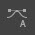 | Set in and out tangents to auto | Sets the tangents for the selected key(s) (the squares in the graph) to auto. |
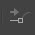 | Set in tangent to zero | Sets the in tangent for the selected key(s) (the squares in the graph) to zero. |
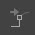 | Set in tangent to step | Sets the in tangent for the selected key(s) (the squares in the graph) to step. |
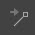 | Set in tangent to linear | Sets the in tangent for the selected key(s) (the squares in the graph) to linear. |
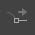 | Set out tangent to zero | Sets the out tangent for the selected key(s) (the squares in the graph) to zero. |
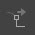 | Set out tangent to step | Sets the out tangent for the selected key(s) (the squares in the graph) to step. |
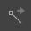 | Set out tangent to linear | Sets the out tangent for the selected key(s) (the squares in the graph) to linear. |
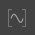 | Fit curves horizontally | Fits the graph into the graph window horizontally. |
Fit curves vertically | Fits the graph into the graph window vertically. | |
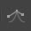 | Break tangents | Breaks the tangents for the selected key(s). |
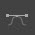 | Unify tangents | Sets the tangents for the selected key(s) to auto. |
5. Properties
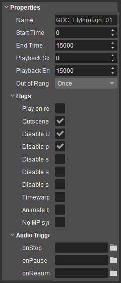
On this panel, you will see a number of properties. Which properties you see depends on which key you have selected on the Dopesheet Events panel.
For instance, if a position or rotation key is selected, the properties that are related to tangents for animation will appear. However, if an event key is selected, the properties related to which event it will use and what value that event should have will be displayed on the Properties panel.
Below, you can see the common properties that can be displayed by choosing a sequence's name above the Dopesheet Nodes and Tracks List. Some of these options appear when a specific key on the Dopesheet or the Curve Editor is selected.
Property | Description |
|---|---|
Name | Name of the selected element. |
Disabled | Allows you to disable the selected track view node. |
Start Time | Time at which the track view sequence starts. |
End Time | Time at which the track view sequence ends. |
Playback Start Time | Time at which the playback loop will start. |
Playback End Time | Time at which the playback loop will end. |
Out of Range |
|
Time | Time of the currently selected node. |
Value | The value of the currently selected node. |
Break Tangents | Sets the tangents for the selected key(s) to auto. |
Incoming tangent type | Lets you change the incoming tangent to one of the following types:
|
Outgoing tangent type | Lets you change the outgoing tangent to one of the following types:
|
Flags | |
Play on reset | Sequence plays automatically when a level is started or player is dead and respawns. |
Cutscene sequence | - Enables the Cut-Scene Toggles. |
Disable UI | Completely disables any UI elements. |
Disable player | Disable player when in game mode. |
Disable seeking | Disables the Jump to Time function in the Animations:PlaySequence node in Flow Graph. |
Disable aborting | Prevents the player from skipping the sequence. |
Disable speed changes | Disables the Play Speed function in the Animations:PlaySequence node in Flow Graph. |
Timewarping in fixed time step | Enables Time Warping in fixed step. This is useful if you're using the t_fixedstep command to lock the framerate. This allows you to alter this command to influence slow/fast motion. |
Animate before game logic | Force track view to take priority over game logic. Can be useful if certain track view animations aren't updating fast enough. |
No MP Synchronization | Track view is not synchronized during multiplayer gameplay. |
Audio Trigger | |
onStop | Triggers an audio effect on Stop. |
onPause | Triggers an audio effect on Pause. |
onResume | Triggers an audio effect on Resume. |
Animating an Entity Component in Track View
Components that are previously added to an entity via the Add Component button on the Properties panel can be animated in Track View. Unlike older entities, this is not something component authors need to opt-in to, meaning it happens automatically.
In order to animate an Entity Component in Track View;
- Add an entity into the scene and add a component to it via the Add Component button on the Properties panel;
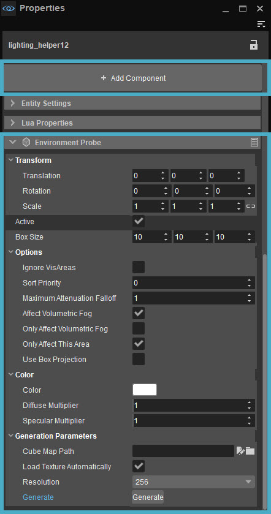
- After the component is added, right-click it on the Nodes and Tracks List and follow the Add Track → Components path to animate its properties in Track View;
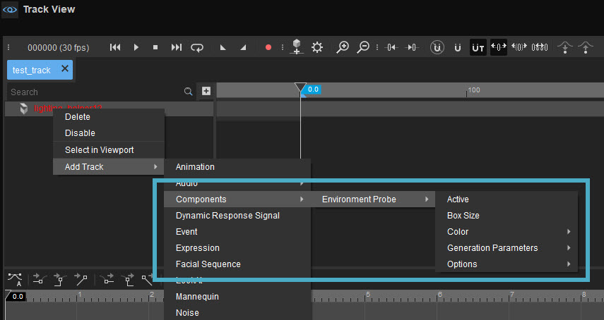
Only certain component types can be introduced to the Events and Tracks List and these are limited to Numbers (float, int), 3D Vector, Rotation, Bool, Color and Angle.
For more information about entity components, please refer to the Entity Components page.